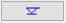
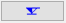
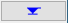
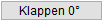
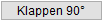
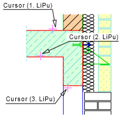
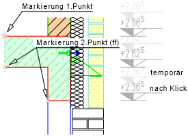
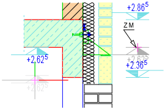

")
")
Definition einer Bezugsebene und Höhenangaben verschiedener Punkte und Ebenen.
|
Hinweis: |
|
Wenn Maße < 1.00 m in der Vermaßung enthalten sind, stellen Sie die Einheit auf Meter! Diese Einstellung bleibt unabhängig von der Einstellung für die anderen Maßketten erhalten. |

1.Bezugshöhe definieren
§Klicken Sie die Linie mit der bekannten Bezugshöhe an. [Welche Linien? n Punkte gefunden].
-Der erste Punkt wird durch dieses Zeichen  markiert. Alle weiteren Höhen erhalten dieses Zeichen
markiert. Alle weiteren Höhen erhalten dieses Zeichen  .
.
-Um falsch angeklickte Punkte zu entfernen, aktivieren Sie im unteren Funktionsbereich die Schaltfläche  [Punkte entfernen] und klicken die zu löschenden Punkte an. Halten Sie alternativ die Umschalttaste (Shift) gedrückt, um in den Entfernen-Modus zu wechseln: am Cursor wird ein Minus-Zeichen eingeblendet. Zwischen [Punkte hinzufügen] und [Punkte entfernen] können Sie mit der Tab-Taste wechseln.
[Punkte entfernen] und klicken die zu löschenden Punkte an. Halten Sie alternativ die Umschalttaste (Shift) gedrückt, um in den Entfernen-Modus zu wechseln: am Cursor wird ein Minus-Zeichen eingeblendet. Zwischen [Punkte hinzufügen] und [Punkte entfernen] können Sie mit der Tab-Taste wechseln.
-Um alle Punkte zu löschen, klicken Sie  [Alle Punkte entfernen] an.
[Alle Punkte entfernen] an.
§Klicken Sie in beliebiger Reihenfolge die übrigen Linien an und beenden Sie die Angabe mit Rechtsklick.
§Geben Sie die bekannte Bezugshöhe ein und bestätigen Sie mit der Eingabetaste. [Höhe 1. Linie].
2.Winkel angeben
Der Winkel der Höhenkote entspricht dem Winkel der Maßzahlen (z. B. für Kote an horizontalen Linien: 0). [Winkel].
§Geben Sie einen Winkel ein und bestätigen Sie mit der Eingabetaste oder klicken Sie einen Vorschlagswert an. Die Höhenkoten werden an den Cursor gehängt.

|
||||||


3.Höhenkote platzieren
§Wählen Sie mittels der folgenden Funktionen und Optionen, wie die Höhenkoten auf der Zeichenfläche abgesetzt werden sollen. [Lage Alle].
-Die Maßeinheit können Sie im Funktionsbereich vor dem Absetzen wechseln.
-Die Ausrichtung und das Höhenkoten-Symbol können Sie vor dem Absetzen jeder einzelnen Höhenkote einstellen (s. Funktion [einzeln setzen]).
Höhenkoten-Symbol (im Funktionsbereich) |
|
 |
Nicht gefüllt. |
 |
Einseitig gefüllt. |
 |
Gefüllt. |
Ausrichtungsoptionen (unter der Abfrageleiste) |
|
 |
Alle Höhenkoten werden um ihre Horizontalachse geklappt. |
 |
Alle Höhenkoten werden um ihre Vertikalachse geklappt. |
Differenzmodus (im Funktionsbereich) |
|
|
Die Höhenkote wird an den angeklickten Punkt gesetzt. |
|
Die Höhenkote wird mit einem Abstand zu einem Punkt gesetzt. §Klicken Sie während die Abfrage [Lage einzeln] aktiv ist den Punkt an, zu dem Sie einen Abstand eingeben möchten. §Geben Sie den Abstand mit dem entsprechenden Vorzeichen ein und bestätigen Sie mit der Eingabetaste |
Funktionen (unter der Abfrageleiste) |
|
Jede Höhenkote wird einzeln abgesetzt. [Lage einzeln]. §Platzieren Sie die Höhenkoten temporär an einer beliebigen Stelle mit einem Linksklick. Die Höhenkoten werden in einer Flucht untereinander angeordnet. An den Cursor wird die erste abzusetzende Höhenkote gehängt. §Verschieben und setzen Sie die erste Höhenkote mit Linksklick ab. Die Höhenkoten können nur auf ihrem Höhenniveau verschoben werden. Die Reihenfolge ist immer von unten nach oben. Um alle Höhenkoten in Flucht zur ersten Höhenkote abzusetzen, bestätigen Sie die Lage der übrigen Höhenkoten nacheinander mit der Eingabetaste. Vor jedem Absetzen einer Höhenkote haben Sie die Möglichkeit, die Höhenkote um ihre Horizontal- und/oder Vertikalachse zu klappen sowie das Höhenkoten-Symbol zu ändern. |
|
Alle Höhenkoten werden abgesetzt. Die Höhenkoten bleiben in einer Flucht untereinander angeordnet. §Setzen Sie die Höhenkoten mit Linksklick ab. |
|


Beispiel:
 |
 |
 |
[Welche Linien n Punkte gefunden]; [Höhe 1.Linie]. Punkte anklicken. Beachten Sie die 1. Linie, diese entspricht der Bezugshöhe. |
[Winkel]. Winkel eingeben - hier: Winkel = 0. |
[Lage der Maßkette]. Zeichenfläche anklicken, um die Maßkette abzusetzen. |
Siehe auch:
·Höhenkote im Grundriss setzen
Zugehörige Referenzen: